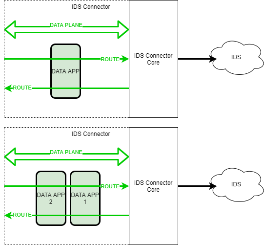
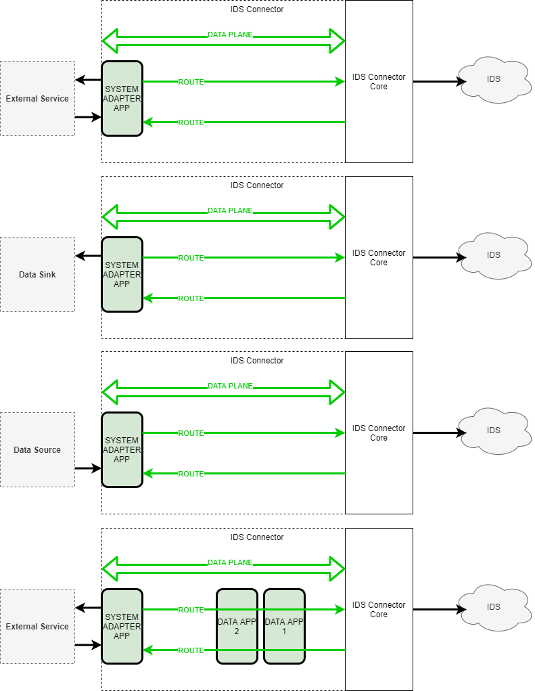
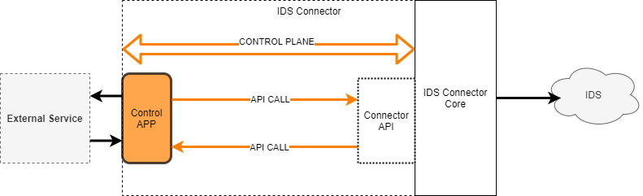

Data App - Types
There are currently three different types of apps available, which in turn must fulfill at least one of the previously mentioned profiles. In addition to the app types there is also a composition of apps, so called app bundle, which consists of multiple apps from all types. The apps in the data app and adapter app categories can fulfill both the basic and advanced profiles and their usage control equivalents. Due to the administrative access of the control app to the control plane, only a grouping into the extended profile is possible, the basic profile cannot be applied here. The different app types and their profiles must be considered from different perspectives during the certification process.
Overview of Data App Types
| Type | Profiles | Applicability | Certification | Note |
|---|---|---|---|---|
| Data App | basic profile, basic profile - uc | generic | App Criteria | data plane |
| Adapter App | basic profile, basic profile - uc, advanced profile, advanced profile - uc | system-specific | App Criteria | data plane |
| Control App | advanced profil, advanced profile - uc | (system-), connector-specific | Connector Criteria | control plane |
| App Bundle | basic profile, basic profile - uc, advanced profile, advanced profile - uc | connector-specific | - - - - - - - - - | data plane, control plane |
In all following setups, we assume that the IDS Connector is running. As the IDS Connector deploys and monitors the IDS Apps, they are theoretically running inside the IDS Connector. That is why there is a separation between the IDS Connector’s core and the overall IDS Connector visualization.
Data App
Applicability: generic
The Data App is a re-usable application that can be downloaded and fully managed by the IDS Connector. When defining the route, matching inputs and outputs of Data App, IDS Connector, and backend system (as data source or sink) have to be put together to define a data flow on consumer or provider side.
Data app example
- Start: IDS Connector endpoint or adapter app (data source)
- Data App endpoint of type
INPUT - Data App endpoint of type
OUTPUT - End: IDS Connector endpoint or adapter app (data sink)
Data app example
- Start: IDS Connector endpoint or adapter app (data source)
- Data App1 endpoint of type
INPUT - Data App1 endpoint of type
OUTPUT - Data App2 endpoint of type
INPUT - Data App2 endpoint of type
OUTPUT - End: Different Data App for further data processing, System Adapter to store data to or external Service endpoint (Apache Camel natively supports multiple protocols to connect to various endpoints)
The Data App can be used in various use cases and perform small processing steps or tasks, as e.g., transform, clean, analyze or anonymize data. Data Apps can be executed connector- and system-independent. Furthermore, Data Apps are independent of the context in which they are used. Data apps can also be chained together on the same data route to summarize multiple processing steps on the same data.

Adapter App
Naming variants: System Adapter App
Applicability: system-specific usage
The Adapter App is a re-usable application that can be downloaded and fully managed by the IDS Connector. When defining the route, matching inputs and outputs of Adapter App, IDS Connector, and data source, data sink or external service have to be put together to define a data flow on consumer or provider side.
External Service example
- Start: Adapter App (External Service output) endpoint of type
OUTPUT - IDS Connector endpoint
- End: Adapter App (External Service input) endpoint of type
INPUT
Data Source example
- Start: Adapter App (Data Source) endpoint of type
OUTPUT - End: IDS Connector endpoint
Data Sink example
- Start: IDS Connector endpoint
- End: Adapter App (Data Sink) endpoint of type
INPUT
Data Source / Data Sink with intermediate Data App example
- Start: IDS Connector endpoint or Adapter App (Data Source) endpoint of type
OUTPUT - (optional) Data App1 endpoint of type
INPUT - (optional) Data App1 endpoint of type
OUTPUT - (optional) Data App2 endpoint of type
INPUT - (optional) Data App2 endpoint of type
OUTPUT - End: Adapter App (Data Sink) endpoint of type
INPUTor IDS Connector endpoint
The Adapter App can be used in various use cases and provides the IDS Connector with the functionality to connect to external services, custom data sources or custom data sinks. This is important when the routing framework is not natively able to support the provided endpoints or protocols. It can be executed connector- but not system-independent, as it only works with pre-defined systems. In general, it is not interested in the context in which it is used.
System adapters following the advanced profile and implementing usage-control are able to enforce usage policies on data sources, data sinks or external services.

- As generic endpoints interacting with the backend system is not sufficient for actually storing data, the app needs to be configured.
- The IDS App needs a defined endpoint for output configuration. It needs to be specified where exactly to route the data into the backend system.
- Possibly *n* input and *m* output endpoints with an unspecified protocol; the route definition uses one specific input endpoint to integrate the app into the data route
- IDS Info Model description of app endpoints, protocol bindings, and supported usage control patterns
- The IDS App gets the artifact and contract agreement id as input. For fetching the agreement, it needs to request the IDS Connector.
Control App
Applicability: system- and/or connector-specific usage
The Control App is a re-usable application that can be downloaded and fully managed by the IDS Connector. In contrast to Data and Adapter Apps, it does not act on the data flow, but on the administrative control flow. It offers the possibility to connect existing backend systems, which may consist of a single or a cluster of applications and services, to an IDS ecosystem using the IDS Connector.
Therefore, it is a connector-specific app that requires programming against the respective API of a connector in a specific version for its implementation.
The administrative capabilities can be applied to different use cases. For example, existing data sources from backend services can be enriched with metadata and subsequently registered at the IDS Connector as IDS Resources. Furthermore, administrative access to the IDS Connector of a Control App enables, for example, the integration of a deployed IAM or IDS communication with other IDS Connectors or IDS Brokers. It also enables advanced functionality on the Connector itself, so a Control App on an IDS Connector can publish resources, negotiate contracts, or configure or provision data routes with Data Apps or Adapter Apps.
Control App example The Control App is connector-specific and even depends on a specific version of the connector implementation. Control Apps offer an interface for the administrative connector API that can be used by another use case-specific implementation.
Such a use case shall be sketched as an example, but can vary arbitrarily according to the functional scope of the implemented interface:
- Create a resource
- Publish resource to the IDS Broker as a data provider
- Automatic Update of data queries as a data consumer

App Bundle
Naming variants: Service App
App bundles can be seen as a composition of apps from the Adapter App, Data App and Control App categories and their implemented profiles. With such a composition, different (already existing) apps can be put together to fulfill a certain use-case or purpose. The compilations for solving specific problems can also be shared across Connectors, a bundle can be shared with other participants in the IDS ecosystem via the central App Store.
Examples
Examples of possible compositions will be shown below. These are only examples for conceptual understanding. Accordingly, the bundles are not subject to any restrictions on the composition of their components.
Read data from backend system connection with preprocessing task
In this example composition a backend system is connected via a Control App for reading data and doing a data cleaning within a Data App before provisioning data over the connector itself.
Data Flow: Backend-System –> (Control App –> Data App) –> Connector
Bundle consists of:
- Control App
- Data App:
Creating a data processing pipeline with Adapter Apps and Data Apps
In this example compositon a simple data processing pipeline is bundled together from different apps. The Adapter App provides data from a data source, which is then processed in a data app (e.g. data cleaning) and then stored again by an adapter app in a data sink.
Data Flow: Adapter App (source) –> Data App –> Adapter App (sink)
Bundle consists of:
- Adapter App (source)
- Data App
- Adapter App (sink)
With the idea of bundleing apps even very complex and specific use cases can be described in different single apps without losing the idea of being partially reusable to others participants.